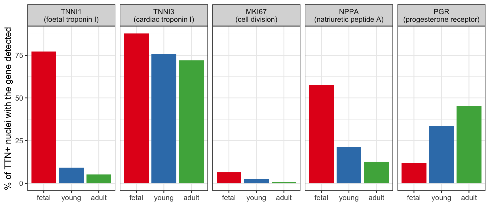

Single-cell RNA-seq analyses usually sort cells into clusters and give each cluster one label. That works well for distinct cell types, but many questions are about cells in transition: cells that are differentiating, maturing, responding to a stimulus, or drifting towards disease. In this workshop we treat such cell states as continuous, and we ask three questions of the same data, one per module:
| Module | Question | Method |
|---|---|---|
| 1 | How much does each cell resemble each reference cell type and developmental stage? | Φ-Space (soft annotation) |
| 2 | Where is each cell along the maturation process? | Pseudotime (slingshot, diffusion pseudotime) |
| 3 | How do relationships between genes change as cells mature? | Cell-specific co-expression networks (NeighbourNet) |
Each module builds on the previous one:
The data throughout is snRNA-seq of the developing human heart.
| Time | Session |
|---|---|
| 0:00–0:15 | Introduction (this page) |
| 0:15–1:05 | Module 1: Continuous phenotyping with Φ-Space |
| 1:05–1:15 | Break |
| 1:15–2:00 | Module 2: Pseudotime trajectory analysis |
| 2:00–2:50 | Module 3: Cell-specific co-expression networks |
| 2:50–3:00 | Wrap-up and questions |
The heart keeps maturing long after it starts beating. Much is known about how the embryonic heart forms, but much less about the signals that turn the foetal heart into the adult one. The heart’s muscle cells, the cardiomyocytes, change in many ways along the way:
None of these happens at a single moment. Maturation is a continuum, and cardiomyocytes from donors of similar age can sit at different points along it.
This workshop uses data from
Sim CB, Phipson B, Ziemann M, et al. Sex-specific control of human heart maturation by the progesterone receptor. Circulation 2021;143(16):1614–1628. doi:10.1161/CIRCULATIONAHA.120.051921
The authors profiled the human heart from foetal stages to adulthood:
Their main finding: the progesterone receptor (gene PGR) drives sex-dependent programs of cardiomyocyte maturation, affecting both metabolism and contractile properties.
The study compared three groups of donors: foetal, young and adult. But the maturation it describes happens gradually within cells, and a donor’s age group is only a coarse proxy for where a given nucleus is along that process. This workshop asks what we can learn by treating maturation as continuous:
To keep the workshop fast, we use a prepared subset of the Sim et al. data together with a published reference atlas.
afternoon_mvp.rds)The original nuclei were processed as follows:
No clustering or cell type annotation has been done: in Module 1, Φ-Space annotates the nuclei.
reference_gao2026.rds)Φ-Space needs an annotated reference. We use a subset of the Gao et al. (2026, Genome Biology) integrated snRNA-seq atlas of the human left ventricle, which spans foetal stages to old age. The subset keeps non-diseased donors only, with the large cell types down-sampled. Module 1 explains why this reference suits our question.
library(Seurat)
library(SingleCellExperiment)
library(ggplot2)
library(dplyr)
library(tidyr)seu <- readRDS("../data/afternoon_mvp.rds")
reference <- readRDS("../data/reference_gao2026.rds")
seu## An object of class Seurat
## 18953 features across 10000 samples within 1 assay
## Active assay: RNA (18953 features, 0 variable features)
## 1 layer present: countsThe query is a Seurat object holding raw counts and one
row of metadata per nucleus:
head(seu@meta.data[, c("sample", "group", "sex", "nCount_RNA", "nFeature_RNA")])table(sample = seu$sample, stage = seu$group)## stage
## sample adult fetal young
## a1 843 0 0
## a2 550 0 0
## a3 259 0 0
## f1 0 1677 0
## f2 0 2192 0
## f3 0 1580 0
## y1 0 0 908
## y2 0 0 990
## y3 0 0 1001table(stage = seu$group, sex = seu$sex)## sex
## stage f m
## adult 843 809
## fetal 1580 3869
## young 990 1909The three stages are not balanced: foetal samples contribute over half of the nuclei. Keep this in mind when comparing stages.
Before any modelling, we can already see maturation in a few well-known genes. We look at nuclei with clear TTN expression (titin, a large sarcomere gene). This is only a rough way to pick out cardiomyocytes; Module 1 annotates cell types properly. For each stage, we count the percentage of these nuclei in which each gene is detected.
genes <- c(TNNI1 = "foetal troponin I",
TNNI3 = "cardiac troponin I",
MKI67 = "cell division",
NPPA = "natriuretic peptide A",
PGR = "progesterone receptor")
counts <- GetAssayData(seu, layer = "counts")
cm_like <- counts["TTN", ] > 2
stages <- c("fetal", "young", "adult")
stage <- factor(seu$group[cm_like], levels = stages)
pct <- sapply(stages, function(s) {
100 * Matrix::rowMeans(counts[names(genes), cm_like][, stage == s] > 0)
})
pct_df <- as.data.frame(pct) |>
tibble::rownames_to_column("gene") |>
pivot_longer(-gene, names_to = "stage", values_to = "percent") |>
mutate(stage = factor(stage, levels = stages),
gene = factor(gene, levels = names(genes),
labels = paste0(names(genes), "\n(", genes, ")")))
ggplot(pct_df, aes(stage, percent, fill = stage)) +
geom_col() +
facet_wrap(~ gene, nrow = 1) +
scale_fill_brewer(palette = "Set1") +
labs(x = NULL, y = "% of TTN+ nuclei with the gene detected") +
theme_bw(base_size = 12) +
theme(legend.position = "none")
Three things stand out:
These are averages over age groups. The rest of the workshop asks how such changes are distributed across individual nuclei, and whether nuclei within the same age group differ in how mature they are.
reference## class: SingleCellExperiment
## dim: 16115 6096
## metadata(0):
## assays(1): logcounts
## rownames(16115): FAM87B LINC00115 ... MT-ND6 MT-CYB
## rowData names(2): gene_id gene_name
## colnames(6096): ENCSR176WWW:TAAGCTGGTGATGGCT
## TWCM-13-96:GGGCATCAGCTCCCAG ... ENCSR008CVR:AATTTGCCAGCGCTTG
## ENCSR203YOV:CTCACAACAGCTAATT
## colData names(22): barcode age ... leiden1.5 cell_type_plus_subcluster
## reducedDimNames(0):
## mainExpName: NULL
## altExpNames(0):table(reference$age_group)##
## fetal middle old young
## 140 2865 2038 1053sort(table(reference$final_cell_type), decreasing = TRUE)##
## Cardiomyocyte Fibroblast Pericyte Myeloid Endothelial
## 1899 1327 717 678 563
## Lymphoid Endocardial vSMC Adipocyte Epicardial
## 176 119 117 100 100
## LEC Mast Neuronal
## 100 100 100The reference’s age groups (fetal, young,
middle, old) are not the same as our query’s
stages (fetal, young, adult).
That’s fine: Φ-Space will score every query nucleus against all four
reference age groups.
vignettes/. Open
it in RStudio and run the chunks in order (Ctrl/Cmd + Shift +
Enter runs the current chunk).results/, and the modules load them instead of recomputing,
so every chunk should finish in seconds. The code that would recompute
them is still shown, so you can see what each step does.By the end of the workshop you should be able to:
sessionInfo()## R version 4.6.0 (2026-04-24)
## Platform: aarch64-apple-darwin23
## Running under: macOS Tahoe 26.6.2
##
## Matrix products: default
## BLAS: /Library/Frameworks/R.framework/Versions/4.6/Resources/lib/libRblas.0.dylib
## LAPACK: /Library/Frameworks/R.framework/Versions/4.6/Resources/lib/libRlapack.dylib; LAPACK version 3.12.1
##
## locale:
## [1] en_AU/en_AU/en_AU/C/en_AU/en_AU
##
## time zone: Australia/Melbourne
## tzcode source: internal
##
## attached base packages:
## [1] stats4 stats graphics grDevices utils datasets methods
## [8] base
##
## other attached packages:
## [1] tidyr_1.3.2 dplyr_1.2.1
## [3] ggplot2_4.0.3 SingleCellExperiment_1.34.0
## [5] SummarizedExperiment_1.42.0 Biobase_2.72.0
## [7] GenomicRanges_1.64.0 Seqinfo_1.2.0
## [9] IRanges_2.46.0 S4Vectors_0.50.1
## [11] BiocGenerics_0.58.1 generics_0.1.4
## [13] MatrixGenerics_1.24.0 matrixStats_1.5.0
## [15] Seurat_5.5.1 SeuratObject_5.4.0
## [17] sp_2.2-1
##
## loaded via a namespace (and not attached):
## [1] RColorBrewer_1.1-3 jsonlite_2.0.0 magrittr_2.0.5
## [4] spatstat.utils_3.2-3 farver_2.1.2 rmarkdown_2.31
## [7] vctrs_0.7.3 ROCR_1.0-12 spatstat.explore_3.8-1
## [10] htmltools_0.5.9 S4Arrays_1.12.0 SparseArray_1.12.2
## [13] sass_0.4.10 sctransform_0.4.3 parallelly_1.48.0
## [16] KernSmooth_2.23-26 bslib_0.11.0 htmlwidgets_1.6.4
## [19] ica_1.0-3 plyr_1.8.9 plotly_4.12.0
## [22] zoo_1.8-15 cachem_1.1.0 igraph_2.3.3
## [25] mime_0.13 lifecycle_1.0.5 pkgconfig_2.0.3
## [28] Matrix_1.7-5 R6_2.6.1 fastmap_1.2.0
## [31] fitdistrplus_1.2-6 future_1.70.0 shiny_1.14.0
## [34] digest_0.6.39 patchwork_1.3.2 tensor_1.5.1
## [37] RSpectra_0.16-2 irlba_2.3.7 labeling_0.4.3
## [40] progressr_1.0.0 spatstat.sparse_3.2-0 httr_1.4.8
## [43] polyclip_1.10-7 abind_1.4-8 compiler_4.6.0
## [46] withr_3.0.3 S7_0.2.2 fastDummies_1.7.6
## [49] MASS_7.3-65 DelayedArray_0.38.2 tools_4.6.0
## [52] lmtest_0.9-40 otel_0.2.0 httpuv_1.6.17
## [55] future.apply_1.20.2 goftest_1.2-3 glue_1.8.1
## [58] nlme_3.1-169 promises_1.5.0 grid_4.6.0
## [61] Rtsne_0.17 cluster_2.1.8.2 reshape2_1.4.5
## [64] gtable_0.3.6 spatstat.data_3.1-9 data.table_1.18.4
## [67] XVector_0.52.0 spatstat.geom_3.8-1 RcppAnnoy_0.0.23
## [70] ggrepel_0.9.8 RANN_2.6.2 pillar_1.11.1
## [73] stringr_1.6.0 spam_2.11-4 RcppHNSW_0.7.0
## [76] later_1.4.8 splines_4.6.0 lattice_0.22-9
## [79] survival_3.8-9 deldir_2.0-4 tidyselect_1.2.1
## [82] miniUI_0.1.2 pbapply_1.7-4 knitr_1.51
## [85] gridExtra_2.3.1 scattermore_1.2 xfun_0.59
## [88] stringi_1.8.7 lazyeval_0.2.3 yaml_2.3.12
## [91] evaluate_1.0.5 codetools_0.2-20 tibble_3.3.1
## [94] cli_3.6.6 uwot_0.2.4 xtable_1.8-8
## [97] reticulate_1.46.0 jquerylib_0.1.4 Rcpp_1.1.2
## [100] globals_0.19.1 spatstat.random_3.5-0 png_0.1-9
## [103] spatstat.univar_3.2-0 parallel_4.6.0 dotCall64_1.2
## [106] listenv_1.0.0 viridisLite_0.4.3 scales_1.4.0
## [109] ggridges_0.5.7 purrr_1.2.2 rlang_1.3.0
## [112] cowplot_1.2.0